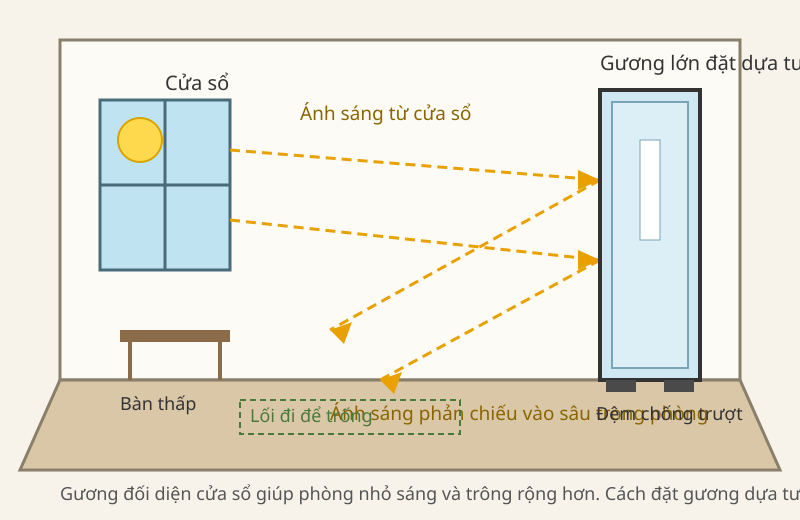

Dùng gương để nới rộng cảm giác không gian phòng nhỏ
Một căn phòng nhỏ thường gây cảm giác chật không chỉ vì diện tích hẹp, mà vì ánh sáng không tới được mọi góc và mắt người nhìn luôn chạm ngay vào tường. Một tấm gương đặt đúng chỗ có thể thay đổi cảm giác đó mà không cần đập tường. Gương không làm phòng rộng thêm một mét vuông nào, nhưng nó đưa ánh sáng đi xa hơn và cho mắt thấy thêm một khoảng không gian phía sau bức tường.
Bài viết này chỉ bàn chuyện đặt gương: chọn vị trí nào để phòng nhỏ trông sáng và rộng hơn. Chăm cây trong nhà và cắm hoa tươi không nằm trong bài — bạn tìm hai chủ đề đó ở website cây cảnh và website cắm hoa. Phần khoan tường và bắt vít treo gương cũng không nằm trong bài này; cách đặt gương lớn dựa tường thế nào cho chắc thì Bài 4 đã hướng dẫn từng bước.
Tất cả những gì gương làm được trong bài này chỉ nằm ở cảm nhận của mắt: phòng sáng hơn và có vẻ rộng hơn, trong khi diện tích thật vẫn y nguyên — và gương cũng không dọn gọn đồ đạc thay bạn được.
Vì sao gương giúp phòng trông rộng hơn
Gương giúp phòng trông rộng hơn theo ba cách, và cả ba đều liên quan tới mắt nhìn chứ không liên quan tới diện tích. Thứ nhất, gương đưa ánh sáng đi xa hơn. Ánh sáng từ cửa sổ thường chỉ sáng rõ khoảng gần cửa sổ, còn góc xa thì tối dần, nhưng khi ánh sáng chạm vào mặt gương, nó dội ngược lại và lan tới những góc mà ánh sáng trực tiếp không tới được. Phòng sáng đều hơn thì căn phòng có cảm giác mở hơn; buổi tối, gương đặt cạnh đèn bàn cũng làm được việc tương tự.
Thứ hai, gương tạo ra chiều sâu giả. Mắt người quen đọc một bức tường phẳng là điểm dừng của căn phòng, nhưng khi bức tường đó có gương, mắt thấy thêm một khoảng phòng nữa phía sau mặt gương. Hiệu quả này rõ nhất khi gương phản chiếu một khoảng không gian có chiều sâu thật, như khung cửa sổ hay một lối đi dài.
Thứ ba, gương nhân đôi những gì đẹp trong phòng: một khung cửa sổ có bầu trời, một bức tranh bạn thích, một góc bàn gọn gàng khi xuất hiện thêm một lần nữa trong gương sẽ làm căn phòng có cảm giác được chăm chút hơn. Ngược lại, gương cũng nhân đôi những gì bừa bộn: một kệ đồ lộn xộn hay một đống quần áo chưa gấp, khi phản chiếu trong gương, sẽ hiện ra hai lần và làm phòng có cảm giác ngột ngạt hơn.
Mặt gương phải sạch thì ba cách trên mới rõ, vì mặt gương bám bụi sẽ phản chiếu ánh sáng mờ đi và hình ảnh nhòe đi. Bạn nên lau gương bằng khăn sợi mịn, xịt dung dịch lau lên khăn thay vì xịt thẳng lên gương, để nước không thấm vào cạnh gương và làm ố lớp tráng phía sau.
Vị trí nên đặt gương
Vị trí có tác dụng rõ nhất là đối diện hoặc gần cửa sổ. Khi gương nằm ở bức tường đối diện cửa sổ, ánh sáng ban ngày đi thẳng vào gương rồi dội lại sâu vào trong phòng, giống như có thêm một ô cửa sổ thứ hai. Vị trí này hợp nhất với cửa sổ đón ánh sáng dịu, như cửa sổ hướng đông; nếu cửa sổ đón nắng chiều gay gắt, gương đối diện có thể hắt nắng thẳng vào mắt người trong phòng. Khi đó bạn nên kéo gương sang bức tường vuông góc với cửa sổ, hoặc treo thêm rèm mỏng ở cửa sổ để làm dịu nắng.
Vị trí thứ hai nên cân nhắc là bức tường cuối của hành lang hẹp. Hành lang trong nhà phố và căn hộ nhỏ thường dài mà hẹp, hai bức tường song song khiến người đi có cảm giác bị kẹp lại, nhưng một tấm gương lớn ở bức tường cuối sẽ phản chiếu cả lối đi và khiến mắt thấy lối đi còn kéo dài thêm. Bạn nên chọn gương cao và hẹp theo chiều dọc, đặt sát sàn hoặc tựa vào tường cuối, và để ý lối đi đủ rộng để người đi không va vào gương.
Vị trí thứ ba là phía sau ghế sofa trong phòng khách nhỏ, hoặc phía trên một chiếc tủ thấp. Một tấm gương đặt ngang phía sau ghế sofa sẽ phản chiếu phần phòng đối diện ghế, nên khi bạn bước vào phòng, mắt bạn thấy cả hai phía cùng lúc. Một gợi ý được nhiều hướng dẫn trang trí nhắc tới là gương treo phía sau ghế sofa nên rộng khoảng hai phần ba chiều dài ghế. Bạn có thể cắt giấy bìa đúng kích thước gương dự định mua và dán thử lên tường vài ngày, để xem tỷ lệ đó có hợp với phòng mình hay không trước khi mua gương thật.
Vị trí thứ tư là cạnh một nguồn sáng nhân tạo trong phòng thiếu cửa sổ. Buổi tối, một tấm gương đặt cạnh đèn bàn hay đèn tường sẽ bắt ánh đèn và tỏa lại khắp phòng, làm các góc tối ấm lên. Bạn nên đặt gương sao cho ánh phản chiếu đi về phía góc tối của phòng, chứ không chiếu thẳng vào mắt người ngồi gần đó.
Vị trí thứ năm là đối diện một điểm nhấn gọn gàng trong phòng, như một bức tranh bạn thích hay một kệ sách đã xếp ngay ngắn. Gương ở đây vừa đưa điểm nhấn đó hiện ra thêm một lần nữa trong tầm mắt, vừa kéo mắt người nhìn đi sâu vào trong phòng thay vì dừng lại ở bức tường gần nhất.
Cuối cùng, với người thuê nhà, gương đặt trên mặt trong của cánh cửa tủ quần áo hoặc gương đứng dựa tường là hai cách không cần khoan tường mà vẫn đạt hiệu quả nới rộng. Gương trên cánh tủ phản chiếu ánh sáng từ cửa sổ khi cửa tủ đóng, và không chiếm thêm diện tích sàn, còn gương đứng dựa tường thì dễ dời chỗ khi bạn muốn thử vị trí khác. Riêng với gương lớn đặt dựa tường, bạn nên xem cách đặt an toàn ở Bài 4 trước khi đặt.
Vị trí không nên đặt gương
Vị trí cần cân nhắc kỹ nhất là đối diện giường ngủ. Nhiều người thấy khó chịu khi tỉnh dậy và nhìn thấy bóng mình cử động trong gương ngay đối diện giường. Cảm giác đó không phải là quy tắc chung cho mọi người, vì đây là chuyện sở thích của người nằm trên giường, nên bạn nên hỏi chính người ngủ trong phòng đó. Bạn nên đặt tạm gương ở đó trong vài đêm, ngủ thử rồi mới quyết định.
Vị trí thứ hai cần cân nhắc là bức tường đối diện cửa ra vào. Khi bạn vừa mở cửa bước vào phòng, hình phản chiếu của chính bạn sẽ hiện ra ngay trước mặt trong gương, và một số người thấy bất ngờ, nhất là buổi tối khi phòng còn tối và đèn chưa bật. Ngoài ra, gương ở vị trí này phản chiếu cả lối đi ngoài cửa mỗi khi cửa mở, nên bạn nên đặt gương lệch sang tường bên cạnh cửa thay vì đặt thẳng đối diện.
Vị trí thứ ba nên tránh là đối diện góc bừa bộn, cửa nhà vệ sinh hay bàn làm việc đầy giấy tờ và dây điện. Gương không chọn lọc thứ nó phản chiếu: một góc để đồ lộn xộn sẽ hiện ra hai lần trong gương, và phòng có cảm giác bừa bộn gấp đôi, còn gương đối diện bàn làm việc sẽ làm người ngồi thấy đống giấy tờ ở cả phía trước lẫn phía sau. Bạn nên đứng ở vị trí đặt gương và nhìn thẳng vào gương để kiểm tra: nếu trong gương là cửa nhà vệ sinh mở hay đống đồ chưa gấp, bạn nên đổi vị trí gương hoặc dọn gọn góc đó trước.
Vị trí thứ tư nên tránh là góc tối trong phòng, nơi gương nhỏ gần như không nhận được ánh sáng nào. Một tấm gương nhỏ đặt trong góc tối chỉ phản chiếu lại chính góc tối đó, nên nó không mang thêm ánh sáng vào phòng. Nếu góc phòng đã tối và không có cửa sổ gần đó, bạn nên đặt gương ở tường gần cửa sổ hoặc cạnh đèn, thay vì đặt gương vào chính góc tối đó.
Vị trí thứ năm nên tránh là đặt quá nhiều gương trong cùng một phòng, hoặc treo nhiều tấm gương nhỏ vụn vặt trên cùng một bức tường. Một tấm gương lớn cho hiệu quả nới rộng rõ hơn nhiều tấm gương nhỏ ghép lại, vì hình ảnh trong gương lớn không bị chia cắt thành nhiều mảnh. Một phòng nhỏ chỉ cần một tấm gương lớn đặt đúng chỗ là đủ; gương thứ hai chỉ nên thêm khi nó phục vụ một việc khác, như gương soi ở cửa ra vào hay gương trên cánh tủ quần áo.
Chọn kích thước và hình dáng gương
Kích thước gương quyết định phần lớn hiệu quả nới rộng. Một tấm gương lớn phản chiếu được nhiều diện tích phòng và nhiều ánh sáng hơn một tấm gương nhỏ, nên trong phòng nhỏ, một tấm gương lớn thường hiệu quả hơn. Bạn nên đo mảng tường trống rồi chọn gương vừa với mảng tường đó, để lại một khoảng tường trống đều quanh gương cho mắt nghỉ.
Gương chữ nhật treo ngang kéo dài cảm giác theo chiều ngang của bức tường, hợp với phòng khách nhỏ và tường sau ghế sofa. Gương chữ nhật treo dọc kéo mắt nhìn lên cao, hợp với phòng trần thấp và hành lang hẹp. Gương tròn và gương vòm làm phòng mềm mại hơn, vì đường cong của gương cân bằng lại các đường thẳng của tủ và kệ. Bạn nên chọn hình dáng theo bức tường và món đồ đặt bên dưới: gương tròn hợp với tủ thấp và bàn trang điểm, gương chữ nhật hợp với ghế sofa dài, gương đứng toàn thân hợp với góc phòng cạnh tủ quần áo.
Một hướng dẫn chọn gương nhắc tới khoảng tham khảo là tâm gương nằm ở độ cao khoảng 145 đến 160 cm tính từ sàn, gần tầm mắt của người đứng. Khoảng này chỉ là điểm bắt đầu để bạn thử: bạn nên chỉnh tâm gương theo tầm mắt của người dùng gương nhiều nhất. Với gương treo phía trên tủ thấp, một gợi ý khác là chiều rộng gương khoảng hai phần ba đến ba phần tư chiều rộng món đồ bên dưới, và mép dưới gương cách mặt tủ khoảng 15 đến 25 cm. Với gương soi toàn thân, một gợi ý được nhắc tới là nên chọn gương cao từ 150 cm trở lên.
Khung dày, nhiều chi tiết chạm trổ hoặc màu tương phản mạnh với tường sẽ chiếm nhiều diện tích thị giác và làm phòng có cảm giác nặng nề hơn. Với phòng nhỏ, gương không khung hoặc khung mỏng, màu trung tính như đen, trắng, gỗ sáng màu hay kim loại mảnh thường hợp hơn, và bạn nên chọn màu khung theo màu chân bàn, chân đèn hay tay nắm tủ trong phòng.
Đặt gương dựa tường an toàn
Với gương lớn, cách đặt dựa tường hợp với người thuê nhà vì không cần khoan tường, nhưng bạn không nên đặt gương dựa tường một cách tùy tiện rồi bỏ đó. Gương lớn đặt dựa tường phải có đệm chống trượt và đặt xa lối đi, theo Bài 4 của website này. Bạn nên xem cách đặt gương dựa tường an toàn ở Bài 4, bài này không viết lại các bước đó.
Riêng với nhà có trẻ nhỏ hoặc thú cưng, bạn cần cố định phần trên của gương đứng vào tường bằng dây hoặc ke chống lật, và ưu tiên chọn gương có phim an toàn ở mặt sau để hạn chế mảnh vỡ văng ra nếu gương bị đổ. NOTAG, nguồn số 1 của bài, nhắc riêng ý này cho gương đứng trong nhà có trẻ nhỏ và thú cưng. Đệm chống trượt dưới chân gương chỉ giữ gương khỏi trượt ngang, không giữ được gương khi trẻ nhỏ đu lên hoặc thú cưng va mạnh vào mặt gương.
Với gương nhỏ, bạn chỉ nên treo bằng móc dán khi gương thật nhẹ, và cần đọc mức tải trên bao bì của gói móc bạn mua. Chi tiết về mức tải và cách chọn móc dán đã có trong Bài 4, bài này chỉ nhắc lại để bạn không quên kiểm tra bao bì. Gương nặng không treo bằng móc dán, và bạn không nên treo gương nặng phía trên giường, bàn làm việc hay nơi trẻ nhỏ hay ngồi chơi.
Cách thử vị trí trước khi chốt
Bạn không cần mua gương rồi mới biết vị trí đó có hợp hay không: bạn có thể thử trước bằng những cách đơn giản trong vài ngày.
| Bước thử | Cách làm | Bạn sẽ biết được gì |
|---|---|---|
| Quan sát ánh sáng | Đứng giữa phòng vào sáng, trưa và chiều, ghi lại góc nào sáng, góc nào tối | Cửa sổ nào cho ánh sáng dịu, góc tối nào cần gương hắt sáng |
| Ngồi thử ở chỗ quen thuộc | Ngồi ở ghế sofa, bàn làm việc và giường, nhìn về phía vị trí dự định | Gương sẽ phản chiếu thứ gì, ánh phản chiếu có chiếu vào mắt bạn không |
| Dán giấy bìa đúng cỡ gương | Cắt giấy bìa đúng cỡ gương dự định, dán tạm lên tường vài ngày | Tỷ lệ gương có hợp với tường và đồ bên dưới không |
| Mượn gương thử vài đêm | Mượn một tấm gương nhỏ, đặt tạm ở vị trí dự định, ngủ thử vài đêm | Người ngủ có thấy khó chịu khi tỉnh dậy không, vị trí đó có vướng lối đi không |
| Lau thử mặt gương cũ | Lau sạch một tấm gương bạn đã có, đặt tạm ở vị trí dự định trong một ngày nắng | Vị trí đó có đủ sáng để gương phát huy tác dụng không |
Sau khi thử xong, bạn chỉ cần chọn một vị trí tốt nhất và một tấm gương vừa với vị trí đó. Với phòng chỉ có một cửa sổ, bạn thử hai vị trí là đối diện cửa sổ và tường vuông góc với cửa sổ là đủ.
Kết luận
Một tấm gương không nới được diện tích thật, nhưng nó đổi được cách mắt bạn đọc căn phòng: sáng đều hơn, sâu hơn, và gọn hơn trong cảm nhận. Trước khi mua, bạn cứ thử bằng giấy bìa và mượn gương đặt tạm vài ngày — vị trí nào cho bạn cảm giác đó thì giữ, vị trí nào làm bạn khó chịu thì đổi. Bạn chỉ cần nhớ ba việc: đặt gương ở nơi nó phản chiếu ánh sáng và thứ đẹp trong phòng, tránh đặt gương ở nơi nó phản chiếu sự bừa bộn, và chọn gương lớn vừa với tường thay vì nhiều gương nhỏ. Với gương lớn đặt dựa tường, bạn xem cách đặt an toàn ở Bài 4 trước khi đặt, và với gương nhỏ treo bằng móc dán, bạn đọc mức tải trên bao bì của gói móc bạn mua.
Nguồn tham khảo
- NOTAG, "Cách chọn gương trang trí giúp không gian rộng và sáng hơn" (đăng 06/11/2026, cập nhật 10/11/2026) — dùng cho các khẳng định: gương không nới rộng diện tích thật mà tạo cảm giác rộng nhờ phản chiếu ánh sáng và chiều sâu; gương lớn hiệu quả hơn nhiều gương nhỏ; gương đối diện cửa sổ nhân đôi lượng sáng, cửa sổ hướng tây gây chói nên dùng rèm mỏng hoặc chuyển sang tường vuông góc; gương ở cuối hành lang hẹp giúp lối đi trông dài hơn; tâm gương treo độc lập khoảng 145–160 cm tính từ sàn; gương trên tủ rộng khoảng 2/3–3/4 món đồ bên dưới, mép dưới cách mặt tủ khoảng 15–25 cm; gương toàn thân nên chọn từ 150 cm trở lên; lau gương bằng khăn sợi mịn, xịt dung dịch lên khăn thay vì lên gương; gương đứng trong nhà có trẻ nhỏ hay thú cưng thì cố định phần trên vào tường bằng dây hoặc ke chống lật, ưu tiên gương có phim an toàn mặt sau (truy cập 23/11/2026): https://notag.vn/cach-chon-guong-trang-tri-giup-khong-gian-rong-va-sang-hon/
- Home Tips and Trick, "4 cách bài trí gương giúp nhà sáng và rộng hơn" — dùng cho các khẳng định: gương đặt đối diện hoặc nghiêng hướng cửa sổ phản chiếu ánh sáng vào sâu trong phòng, giảm góc tối; gương lớn ở cuối hành lang tạo cảm giác chiều dài tăng lên; nên tránh đặt gương phản chiếu trực tiếp vào giường ngủ vì có thể gây cảm giác bất an hoặc ảnh hưởng giấc ngủ; lau gương bằng nước ấm pha giấm trắng theo tỷ lệ 1:1 và khăn sợi mịn (truy cập 23/11/2026): https://hometipsandtrick.com/blog/4-cach-bai-tri-guong-giup-nha-sang-va-rong-hon
- Lazada Decoration, "Cách đặt gương trong phòng nhỏ để mở rộng không gian và phối hợp đồ trang trí nội thất" (đăng 22/08/2026) — dùng cho các khẳng định: hiệu quả mở rộng chỉ là cảm giác thị giác, không phải diện tích thật tăng lên; gương đối diện hoặc vuông góc với cửa sổ tạo cảm giác như có thêm một ô cửa sổ thứ hai, cần rèm mỏng khi nắng gắt; gương lớn ở cuối hành lang tạo cảm giác đường đi kéo dài; gương ngang phía sau ghế sofa nên rộng khoảng hai phần ba chiều dài ghế; gương gần đèn giúp góc tối ấm hơn vào buổi tối; không nên đặt gương đối diện giường ngủ vì ánh phản chiếu khi thức giấc giữa đêm có thể gây giật mình; một tấm gương lớn nguyên khối hiệu quả hơn nhiều mảnh gương nhỏ ghép lại; gương nhỏ treo bằng móc dán chỉ dùng cho gương nhẹ, đọc mức tải trên bao bì (truy cập 23/11/2026): https://decoration.lazada.vn/how-to-place-mirrors-in-small-rooms-to-expand-space-and-coordinate-interior-decor-vn/
- Dorm Room Blueprint, "Dorm Room Mirror Ideas: Make a Small Room Look Bigger" (đăng 17/10/2025, cập nhật 03/06/2026) — dùng cho các khẳng định: gương soi toàn thân đặt đối diện hoặc kề cửa sổ có tác dụng rõ nhất; gương dựa tường là cách đặt không cần lắp đặt; gương đối diện giường có thể khiến một số người thấy khó chịu khi tỉnh dậy nên thử trước khi chốt; gương nhỏ trong góc tối phản chiếu gần như không có gì và ít tác dụng (truy cập 23/11/2026): https://dormroomblueprint.com/blog/dorm-room-mirror-ideas
- Chợ Decor, "Decor nhà thuê không khoan tường: cách làm, giữ cọc" — dùng cho khẳng định trong bài này về gương lớn đặt dựa tường: gương đặt đứng trên sàn tựa vào tường, kê đệm cao su chống trượt, đặt xa lối đi (bài này chỉ nhắc tới bằng chữ, chi tiết đầy đủ xem Bài 4 của website này) (truy cập 23/11/2026): https://chodecor.com/bai/decor-nha-thue-khong-khoan-tuong
Phương án ảnh

Đây là sơ đồ minh họa, không phải ảnh chụp thực hành